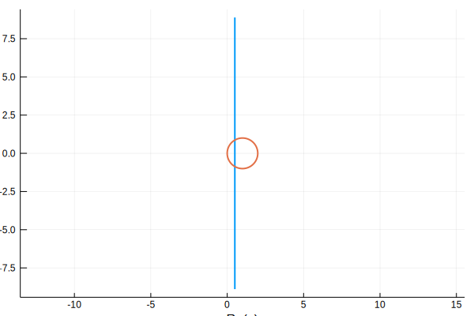
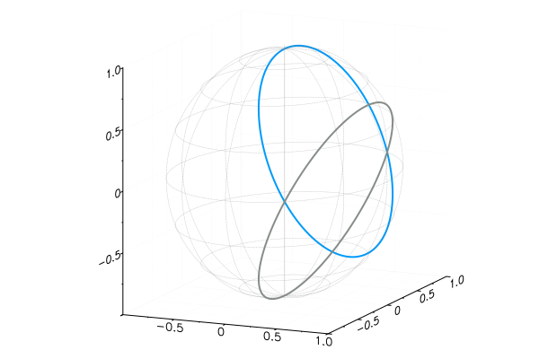
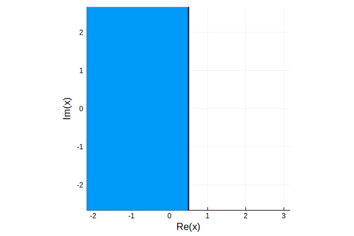
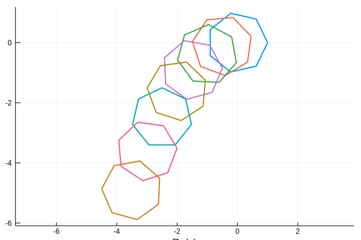
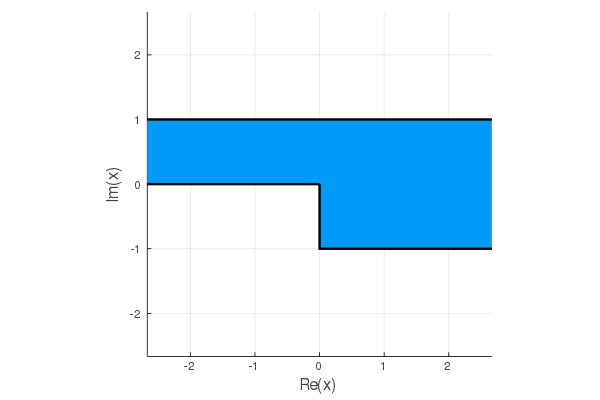

ComplexRegions
This package provides types and methods that are useful for working with curves and regions in the (extended) complex plane.
Most functionality is provided through Julia types (roughly equivalent to classes in an object-oriented language). Per Julia conventions, these are all capitalized. You use these capitalized names to create values of the type; e.g., Segment and Circle.
Other functions (methods, in Julia terms) may create values of these types, but since they are not distinct types themselves, they are not capitalized. For example, the rectangle method creates a Polygon.
The methods in this package should work not only with the built-in Complex type, but also with the Polar and Spherical types from the ComplexValues package, which it re-exports.
Abstract types
All abstract types have names starting with Abstract. You probably won't encounter them unless you want to extend the provided functionality.
An abstract type cannot itself be instantiated as a value. They serve as supertypes that collect common-denominator functionality, much like an interface in other languages. For example, any AbstractCurve is supposed to provide functions for finding points, tangents, and normals along the curve. Specific subtypes such as a Ray or Arc provide additional specialized functionalities appropriate to the subtypes.
Curve, Path, and Region
A curve is meant to be a smooth, non-self-intersecting curve in the extended complex plane. There is a generic Curve type that requires you to specify an explicit parameterization that is not checked for smoothness or even continuity. Implementations are given for more specific types of curve.
A path is a piecewise-continuous complex-valued path. In practice a Path can be specified as an array of curves. The path is checked for continuity at creation time. The most important provided specific path types are Polygon and CircularPolygon.
Both curves and paths have closed variants. These are additionally checked that the initial and final points are the same.
One atypical aspect of curves and paths, even "closed" ones, is that they lie in the extended or compactified complex plane and thus may be unbounded. For instance, a line in the plane may be interpreted as a circle on the Riemann sphere, and is thus a "closed" curve passing through infinity.
A region is an open region in the extended plane bounded by a closed curve or path.
Some examples:
julia> ℓ = Line(1/2,1/2+1im) # line through 0.5 and 0.5+1i
Line{Complex{Float64}} in the complex plane:
through (0.5 + 0.0im) parallel to (0.0 + 1.0im)
julia> c = 1 / ℓ # a circle
Circle{Complex{Float64}} in the complex plane:
centered at (1.0 + 0.0im) with radius 1.0, negatively oriented
julia> intersect(ℓ,c)
2-element Array{Complex{Float64},1}:
0.5 + 0.8660254037844386im
0.5 - 0.8660254037844386im
julia> plot(ℓ); plot!(c)
Plot{Plots.GRBackend() n=2}
julia> plot(Spherical(ℓ)); plot!(Spherical(c))
Plot{Plots.GRBackend() n=40}
julia> reflect(-1,c) # reflection of a point through the circle
0.5 + 0.0im
julia> plot(interior(ℓ)) # plot a half-plane
Plot{Plots.GRBackend() n=1}
julia> h = n_gon(7)
Polygon with 7 vertices:
1.0 + 0.0im, interior angle 0.7142857142857143⋅π
0.6234898018587336 + 0.7818314824680298im, interior angle 0.7142857142857143⋅π
-0.22252093395631434 + 0.9749279121818236im, interior angle 0.7142857142857143⋅π
-0.900968867902419 + 0.43388373911755823im, interior angle 0.7142857142857143⋅π
-0.9009688679024191 - 0.433883739117558im, interior angle 0.7142857142857143⋅π
-0.2225209339563146 - 0.9749279121818236im, interior angle 0.7142857142857143⋅π
0.6234898018587334 - 0.7818314824680299im, interior angle 0.7142857142857143⋅π
julia> plot(h);
julia> for k in 1:7
z = exp(k*2im*π/20)
plot!(z*h - 0.5k - 0.1im*k^2)
end
julia> p = Polygon([0,-1im,(0,0),1im,(pi,pi)]) # channel with a step
Polygon with 5 vertices:
0.0 + 0.0im, interior angle 1.5⋅π
0.0 - 1.0im, interior angle 0.5⋅π
Inf + 0.0im, interior angle 0.0⋅π
0.0 + 1.0im, interior angle 1.0⋅π
Inf + 0.0im, interior angle 0.0⋅π
julia> plot(interior(p))
Plot{Plots.GRBackend() n=1}
Tolerance
Boundaries and endpoints are not well-posed ideas in floating-point, since an arbitrarily small perturbation to a value can move a point on or off of them. Thus many concepts in the package such as intersection or continuity are checked only up to a small tolerance. This value can be set on a per-call basis, or by using global defaults.
Global defaults
For work at the REPL, it's convenient to be able to set an influential parameter just once rather than in multiple calls. This mechanism is provided via ComplexRegions.default. You can see all the default parameters and values as follows:
julia> ComplexRegions.default()
Dict{Symbol,Float64} with 1 entry:
:tol => 1.0e-12Changing them is done with the same function:
julia> ComplexRegions.default(tol=1e-8)
[ Info: Default value of `tol` set to 1.0e-8.Be advised that this type of "stateful" computing brings some subtle undesirable consequences. For example, if the global default tol is changed in a future release of the package, existing code could give different results when testing for interior points. If maximum reproducibility is a concern, you should develop the habit of setting all defaults yourself at the beginning of your code.